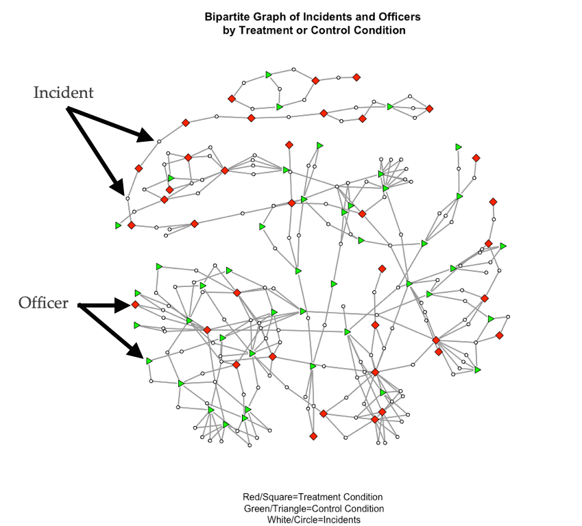
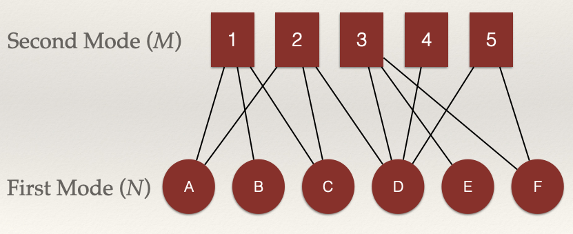
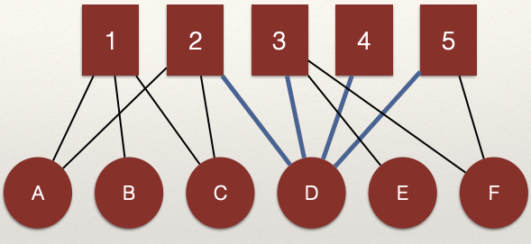
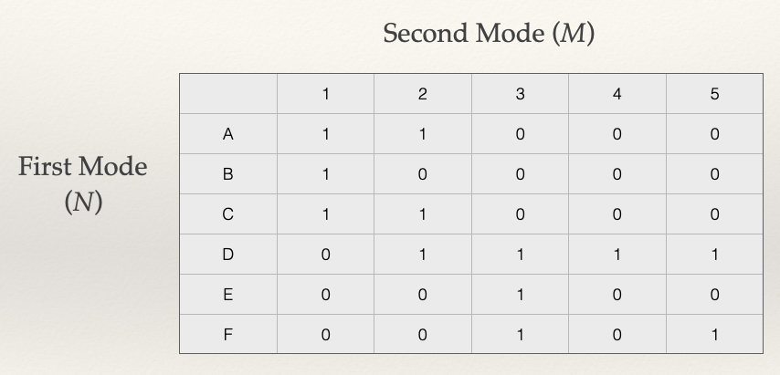
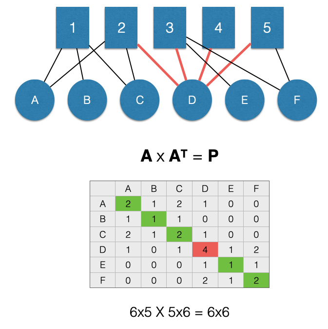

Projection
In the prior chapter on Bipartite Graphs/Two-Mode Networks, we saw that not all of the networks we want to examine have a single node set. We discussed how complex relational structures with multiple partitions of node sets can be examined using bipartite graphs.
Case Study: Body-Worn Cameras, Police Officer Perceptions, and Shared-Incident Networks (revisited)
Let’s revisit the study by Young and Ready (2015) discussed in the previous chapter. Recall that the researchers sought to examine two research questions:
- How do police officers “frame” body-worn cameras?
- Is the meaning officers attribute to cameras created and transmitted in groups?
To answer these questions, Young and Ready (2015) studied the two-mode network of shared incidents between police officers:
To study how police officers’ views of body cameras were influenced by those with whom they shared incidents, Young and Ready (2015) actually examined this network:

In this network, the nodes are police officers and the edges represent shared incidents. The width of the edges represents the number of shared incidents in that wider edges between two nodes mean that more incidents were shared between those nodes. So if two officers have a thick edge connecting them, it means that they were present at multiple incidents at the same time. This network is the “weighted, unipartite projection” of the bipartite graph.
Where did this graph come from? It was created through a process called projection. In this chapter you will learn how to project two-mode graphs to one-mode graphs. By the end of this chapter, you should be able to:
- Describe how to create a unipartite graph from a bipartite graph.
- Explain the difference between dichotomized projections and summation projections.
Projection: Terminology and Conceptual Aspects
Bipartite networks can be represented using an adjacency matrix where the rows and columns correspond to the separate sets of nodes \(N\) and \(M\), respectively. While the Bipartite Graphs/Two-Mode Networks chapter discussed ways to examine such an adjacency matrix, a very common approach in research is to reduce the bipartite graph to a unipartite graph. This is done for several reasons, but the main reason is that there are more analytic tools available for examining a single set of nodes. Projection is the process by which we map the connectivity between modes to a single mode.
For example, let’s say we have a two-mode network of people (\(N\)) in groups (\(M\)). By projecting, we get either:
- A one-mode network of people connected to people by groups (an \(N \times N\) adjacency matrix) and/or
- A one-mode network of groups connected by people (an \(M \times M\) adjacency matrix).
We can see this graphically by taking a look at our example network from the Bipartite Graphs/Two-Mode Networks chapter:

Consider nodes A, B, and C. Are they connected?
We can see that A, B, and C are connected through the shared edges with node 1. That is, the edges \(L_{A,1}\) and \(L_{B,1}\) connect nodes A and B. The same for edges \(L_{B,1}\) and \(L_{C,1}\) which connect nodes B and C.
What about node 2 ?

We can see that A, C, and D are connected through the shared edges with node 2. That is, the edges \(L_{A,2}\) and \(L_{C,2}\) connect nodes A and C and edges \(L_{C,2}\) and \(L_{D,2}\) connect nodes C and D.
These connections are what the projection to the \(N\) node set will render in the unipartite graph.
What about the \(M\) nodes?

We can see that 2, 3, 4, and 5 are connected through the shared edges with node D. That is, the edges \(L_{D,2}\) and \(L_{D,3}\) connect nodes 2 and 3 and edges \(L_{D,4}\) and \(L_{D,5}\) connect nodes 4 and 5.
Note that nodes in one node set can be connected through multiple nodes in the alternative node set. For example:

That is, the edges \(L_{D,3}\) and \(L_{D,5}\) connect nodes 3 and 5. But, nodes 3 and 5 are also connected by edges \(L_{F,3}\) and \(L_{F,5}\) (highlighted in the figure).
Building the Projection
In an influential paper titled The Duality of Persons and Groups, Breiger (1974) proved mathematically that we can build the adjacency matrix for each projected network through matrix algebra. (YAY!). If you are unfamiliar with matrix algebra, that is fine. It is simply using mathematical expressions on matrices (e.g. adding two matrices, or multiplying two matrices). Since the bipartite graph represents two nodes sets, we can create two unipartite graphs: a “people” network and a “group” network. The “people” network is the connections between the \(N\) nodes and the “group” network is the connections between the \(M\) nodes.
Let’s make this more concrete. We create these projections by multiplying an adjacency matrix by it’s transpose. The transpose of a matrix simply reverses the columns and rows:
\[A^T_{ij} = A_{ji}\]
Here, the \(T\) in the superscript is used to indicate the transpose of the matrix \(A\). Note that all we do is switch the columns and rows.
A two-mode \(N \times M\) adjacency matrix, can be projected to:
- A \(M \times M\) matrix (ties among \(M\) nodes via \(N\)) and/or
- A \(N \times N\) matrix (ties among \(N\) nodes via \(M\))
Let’s take our example network above and look at this a bit closer:

Note that our matrix, \(A\), has 6 rows and 5 columns. This means it has order \(6 \times 5\).
Recall, that the transpose of a matrix simply reverses the columns and rows. To get the transpose, imagine rotating the matrix 90 degrees, and then flipping it over. That would give us this:

In the transpose, \(A^T\), the rows and columns have been switched. We now have 5 rows and 6 columns. This means it has order \(5 \times 6\).
So what?
We need to briefly review some rules about matrix multiplication to understand why the emphasis on order is important.
Matrix Multiplication Rules
To multiply two matrices, the number of columns in the first matrix must match the number of rows in the second matrix. For example:
- \(5 \times 6\) X \(6 \times 5\) works,
- but \(5 \times 6\) X \(5 \times 6\) does not work.
The rule is that the “inner numbers must match”, meaning that the two inside numbers (the number of columns in the first matrix and the number of rows in the second matrix) must be the same.
Product Matrix
When we multiply two matrices, we get the product matrix. The product matrix has the number of rows equal to the first matrix and the number of columns equal to the second matrix. For example: \(5 \times 6\) X \(6 \times 5\) = \(5 \times 5\).
The product matrix is the projected graph. Recall that there are two potential product matrices we can create:
- \(A \times A^T\) (what Breiger (1974) called the “people” matrix, \(P\)) and
- The \(A^T \times A\) (what Breiger (1974) called the “group” matrix \(G\))
What does each one represent?
To answer this question, let’s work on creating the projections!
“People” Matrix
To create the “people” matrix, \(P\), which connects nodes in the the set \(N\), we perform the following matrix multiplication for our adjacency matrix \(A\):
\[A \times A^T = P\] Let’s see how this works by visualizing our example:

After multiplication we get:

The product matrix as rows \(N \times N\) shows us how people are connected by groups.
The values of the matrix show two important things:
- The diagonal cells represents the count of ties that a specific node in \(N\) has with nodes in \(M\)
- The off-diagonal cells count the number of ways that separate nodes in \(N\) are connected by nodes in \(M\)
Let’s take a look at each of these points.
Diagonal Cells
The diagonal tells us the count of ties that a specific node in \(N\) has with nodes in \(M\). Using the language of “groups” to refer to the \(M\) node set, the diagonal is the count of groups to which a node in \(N\) is connected.
For example, in the figure below, D is in 4 groups:

We can see this in the graph by counting the edges, but also by looking at the \(P_{D,D}\) cell of the adjacency matrix \(P\) (highlighted in red).
Here is a question. What network measure does the diagonal give us? Think back to the chapter on Bipartite Graphs/Two-Mode Networks. It is the degree centrality score!
Off-Diagonal Cells
The off-diagonal cells count the number of ways that separate nodes in \(N\) are connected by nodes in \(M\). Using the language of “people” to refer to the \(N\) node set, the off-diagonal represents the count of other people to whom a node in \(N\) is connected.
For example, in the figure below, nodes A and B are linked through a single node, 1. This means the value for the \(P_{A,B}\) cell of the adjacency matrix \(P\) (highlighted in green) is 1.
Note that when we project, it forces the matrix to be symmetric. This means that the projection creates an undirected unipartite graph. As a result, the value for the \(P_{B,A}\) cell of the adjacency matrix \(P\) (also highlighted in green) is 1.
Let’s look at another example:

Here, A and C are linked through two nodes in \(M\), 1 and 2. This means that the value for the \(P_{A,C}\) cell of the adjacency matrix \(P\) (highlighted in green) is 2 and the value for the \(P_{C,A}\) cell is also 2 (also highlighted in green). Using the language of “groups” to refer to the \(M\) nodes, we can say that A and C are share membership in 2 groups.
Note, the off-diagonal cells represent counts of shared nodes in \(M\), not counts of edges. That is what the diagonal represents.
“Group” Matrix
To create the “group” matrix, \(G\), which connects nodes in the set \(M\), we perform the following matrix multiplication for our adjacency matrix \(A\):
\[A^T \times A = G\] After multiplication we get:

The product matrix has order \(M \times M\) and shows us how groups are connected by people.
As with the product matrix \(P\), the values of the product matrix \(G\) shows two important things:
- The diagonal cells represents the count of ties that a specific node in \(M\) has with nodes in \(N\)
- The off-diagonal cells count the number of ways that separate nodes in \(M\) are connected by nodes in \(N\)
Let’s take a look at each of these points.
Diagonal Cells
The diagonal tells us the count of ties that a specific node in \(M\) has with nodes in \(N\). Using the language of “people” to refer to the \(N\) node set, the diagonal is the count of people to which a node in \(M\) is connected.
For example, in the figure below, 2 is in 3 groups:

We can see this in the graph by counting the edges, but also by looking at the \(G_{2,2}\) cell of the adjacency matrix \(G\) (highlighted in red).
Here is a question. What network measure does the diagonal give us? Again, it is degree centrality!
Off-Diagonal Cells
The off-diagonal cells count the number of ways that separate nodes in \(M\) are connected by nodes in \(N\). Using the language of “groups” to refer to the \(M\) node set, the off-diagonal represents the count of other groups to whom a node in \(M\) is connected.
For example, in the figure below, nodes 1 and 2 are linked through 2 nodes in \(M\), A and C. This means the value for the \(G_{2,1}\) cell of the adjacency matrix \(G\) (highlighted in green) is 2.

Again, note that when we project it forces the matrix to be symmetric. This means that the projection creates an undirected unipartite graph. As a result, the value for the \(G_{1,2}\) cell of the adjacency matrix \(G\) (also highlighted in green) is 2.
Note that the off-diagonal cells represent counts of shared nodes in \(N\), not counts of edges. That is what the diagonal represents.
Dichotomization and Summation
Let’s return to our “people” matrix, which is a projected \(N \times N\) network. Recall that the adjacency matrix looks like this:
Now we are ready to use the tools we have employed in past chapters, right? Hold up. Note that some the off-diagonal cells are greater than 1. This is new territory for us. Now what?
Dichotomization
The most common solution is to define any tie greater than 0 in the adjacency matrix as a 1. That is, we would recode values greater than 1 to just be 1. Then, we recode the diagonal elements to be 0. That would then give us an adjacency matrix of 0s and 1s and we could go about our business as crime analysts. This is called dichotomizing the adjacency matrix and is the most common way of handling projections. The consequence is a binary, undirected, unipartite graph. What a mouthful!
For the people matrix \(P\), we can visualize this process here:

However, note that we lose some information when we dichotomize the adjacency matrix. Specifically, we are treating connections that are greater than 1 as being the same as connections exactly equal to 1. This may make sense in some circumstances. For example, suppose you are only concerned with whether two individuals have ever been arrested together. In this case, the dichotomized matrix makes sense to examine.
But, what if the number of co-arrests is really important? That is, relationships between individuals who have many co-arrests are fundamentally different than those who only have a single co-arrest. In this case, dichotomizing the adjacency matrix could misrepresent the data.
Summation
In situations where we want to preserve the information in the projection, we can retain the values in the adjacency matrix. When we do so, we are working with a weighted, undirected, unipartite graph. Here, the off-diagonal entries are tie weights. We can use this information in visualizations (such as shown in the case above for the study by Young and Ready (2015)).
For example, consider the bipartite network below:
When we project, we can visualize the differences in the network based on whether we dichotomize the adjacency matrix (on the left) or maintain the weights (on the right).
We may be inclined to always keep the network weighted (i.e. not dichotomize the adjacency matrix), but there are far fewer tools for weighted networks. As you continue your work as a crime analyst, be sure to keep in mind what options you have for handling projections.
Test your Knowledge
- What are the two types of projections that can be created from a bipartite graph? Provide an example of each.
- Define the term “transpose” of a matrix and explain its role in projecting networks.
- What do the diagonal cells of a projected adjacency matrix represent? How about the off-diagonal cells?
- In a projected graph, why are the off-diagonal values symmetric? What does this tell us about the resulting graph?
- How would you interpret a high off-diagonal value in the adjacency matrix of a “people” matrix? What might it suggest in terms of real-world relationships?
- What does dichotomization involve, and why might it be useful in network analysis?-
- Give an example of a situation where it is more appropriate to use a weighted graph rather than a dichotomized graph.
Summary
This chapter showed how to project bipartite networks into unipartite graphs. Projection is a useful technique for crime analysts to employ when they need to simplify complex relationships for analysis while retaining critical relational insights. By transforming two-mode data (e.g., individuals and groups) into one-mode networks, analysts can focus on relationships within a single node set, such as connections between co-offenders or shared affiliations between groups. We focused our attention also on the distinction between dichotomized and weighted projections, which allow analysts a way to tailor their approach based on whether binary connections or tie strengths are more relevant to the investigation. The tools and concepts presented, including adjacency matrices, matrix multiplication, and the implications of symmetric matrices, provide foundational methods for analyzing complex relational structures. For crime analysts, mastering these techniques enhances their ability to uncover patterns, predict interactions, and inform data-driven decision-making.